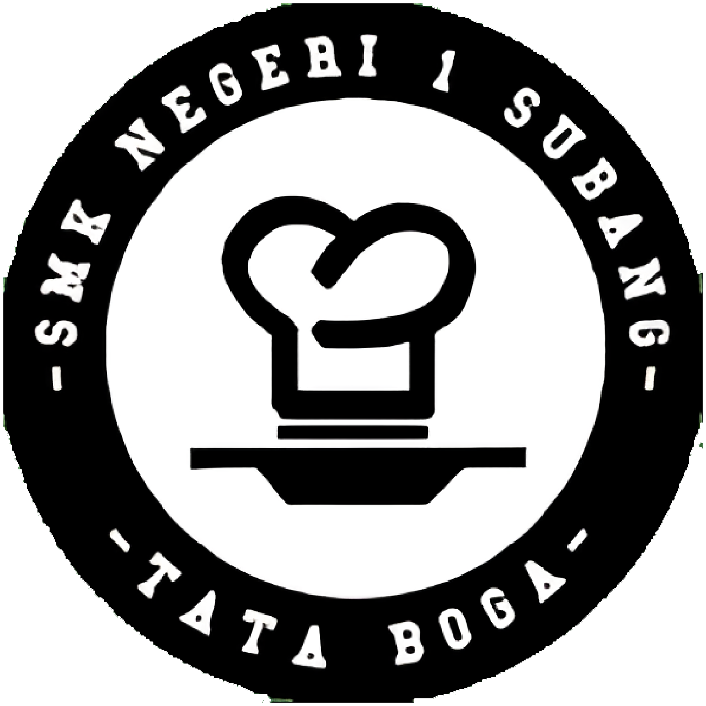

Tata Boga dan Kuliner
Deskripsi
Kompetensi Keahlian Tata Boga merupakan salah satu jurusan atau kompetensi yang memberikan pelajaran di Bidang Pengolahan dan Penyajian Makanan Baik tradisional maupun internasional, dan Tata Hidang/Table Manner.
Kompetensi Dasar
- Keamanan Pangan (Sanitasi, Higienis, dan Keselamatan Kerja)
- Pengetahuan Bahan Makanan
- Boga Dasar
- Ilmu Gizi
- Tata Hidang
- Pengolahan dan Penyajian Makanan
- Produk Cake, dan Kue Indonesia
- Produk Pastry dan Bakery
- Produk Kreatif dan Kewirausahaan
Tujuan Pembelajaran
Tujuan Kompetensi Keahlian Tata Boga secara umum mengacu pada isi Undang-Undang Sistem Pendidikan Nasional (UU SPN) pasal 3 mengenai Tujuan Pendidikan Nasional dan penjelasan pasal 15 yang menyebutkan bahwa pendidikan kejuruan merupakan pendidikan menengah yang mempersiapkan peserta didik terutama untuk bekerja dalam bidang tertentu. Secara khusus tujuan Kompetensi Keahlian Tata Boga adalah membekali peserta didik dengan keterampilan, pengetahuan dan sikap agar kompeten dalam:
- Bekerja baik secara mandiri atau mengisi lowongan pekerjaan yang ada di dunia usaha dan dunia industri sebagai
tenaga kerja tingkat menengah dalam bidang Tata Boga. - Memilih karir, berkompetisi, dan mengembangkan sikap profesional dalam bidang Tata Boga.
- Memiliki kompetensi sesuai jenjang dalam bidang Tata Boga.
Tenaga Pengajar Produktif
- Hermawati Setyani Aksaari, S.Pd.
- Ihat S.Pd.S
- Elin Neli Novianti, S.Pd
Institusi Pasangan
 |
 |